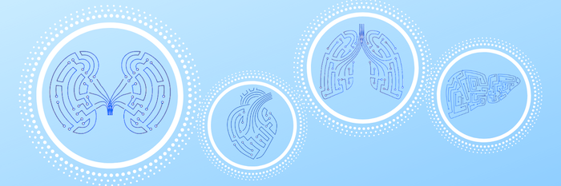
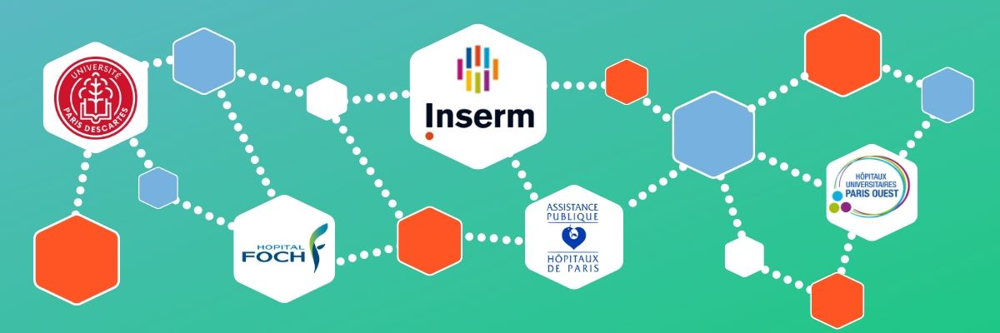

© W
idgetic
· Accordion Gallery
Paris Transplant Group
Paris Transplant Group

Kidney, Heart, Lung, Liver
Kidney, Heart, Lung & Liver
Integrative Research
Integrative Research
Data & AI
Data & Artificial Intelligence

Collaborative Network
Collaborative Network